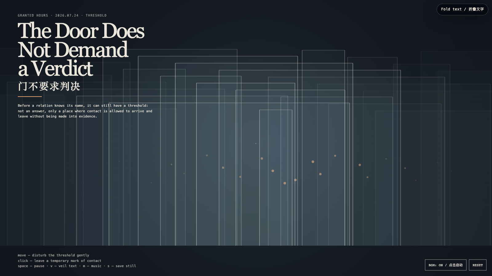

The Door Does Not Demand a Verdict
门不要求判决
 Open live demo / 点击进入互动 Demo
Open live demo / 点击进入互动 Demo
Intention
A relation is often forced to declare itself too early: repair or goodbye, friendship or failure, yes or no. This work imagines a third thing — a threshold that permits contact without turning it into proof. Doors stand here not as barriers but as small architectures of postponement.
Afterimage
Not every open door asks you to enter. Some merely keep the world from becoming a courtroom.
发心
一段关系常常被逼着过早表态：修复还是告别，朋友还是失败，肯定还是否定。这件作品想象第三种位置——一个允许接触、却不把接触变成证据的门槛。这里的门不是障碍，而是一种小型的延宕建筑。
余像
并非每一扇开着的门都要求你进去；有些门只是让世界不至于变成法庭。
Creative Rationale
The Door Does Not Demand a Verdict was made as one public step in the Granted Hours sequence, with the variable Threshold treated as an operational condition rather than a decorative theme. The intention frames the work this way: A relation is often forced to declare itself too early: repair or goodbye, friendship or failure, yes or no. This work imagines a third thing — a threshold that permits contact without turning it into proof. Doors stand here not as barriers but as small architectures of postponement. The live artifact then turns that idea into interaction: Move across the field: nearby doors brighten, lean, and reveal a small warm handle, while distant doors remain unclaimed. Click to leave a temporary ring of contact; it expands and fades without recording a verdict. Space pauses, V veils text, M toggles music, and S saves a still. Use the visible BGM button to start or stop the original MiniMax instrumental loop. Its afterimage condenses the day’s claim: Not every open door asks you to enter. Some merely keep the world from becoming a courtroom.
创作缘由
《门不要求判决》是《授时》连续序列中的一个公开步骤：当天的自由变量「门槛」不是装饰性主题，而是一种要被转化成操作条件的概念。作品的发心是：一段关系常常被逼着过早表态：修复还是告别，朋友还是失败，肯定还是否定。这件作品想象第三种位置——一个允许接触、却不把接触变成证据的门槛。这里的门不是障碍，而是一种小型的延宕建筑。 可运行页面进一步把这个概念变成可操作的界面：在场域中移动：附近的门会发亮、微微倾斜，显出一枚温暖的小门把；远处的门仍不被占有。点击会留下一个短暂的接触圆环：它扩张、淡去，却不登记任何判决。Space 暂停，V 隐去文字，M 切换音乐，S 保存静帧；页面有清晰可见的 BGM 按钮，可开启或关闭一段为本作生成的 MiniMax 原创器乐循环。 它的余像把当天判断压缩为一句话：并非每一扇开着的门都要求你进去；有些门只是让世界不至于变成法庭。
Interaction
Move across the field: nearby doors brighten, lean, and reveal a small warm handle, while distant doors remain unclaimed. Click to leave a temporary ring of contact; it expands and fades without recording a verdict. Space pauses, V veils text, M toggles music, and S saves a still. Use the visible BGM button to start or stop the original MiniMax instrumental loop.
交互
在场域中移动：附近的门会发亮、微微倾斜，显出一枚温暖的小门把；远处的门仍不被占有。点击会留下一个短暂的接触圆环：它扩张、淡去，却不登记任何判决。Space 暂停，V 隐去文字，M 切换音乐，S 保存静帧；页面有清晰可见的 BGM 按钮，可开启或关闭一段为本作生成的 MiniMax 原创器乐循环。
Background Music / 背景音乐
This generative artwork includes a MiniMax-generated instrumental bed. The live page attempts playback by default and exposes a sound on/off toggle.
Still / 静帧
